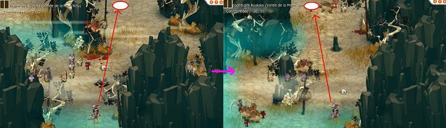
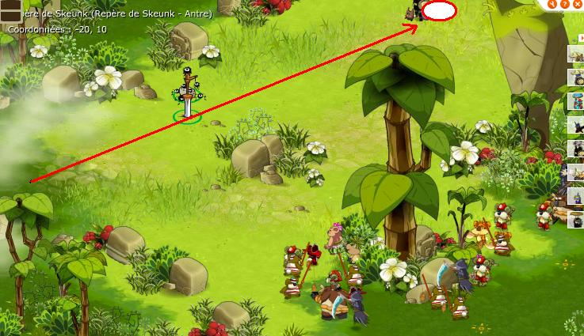

Menu barbok'you

Mourrez dans la zone koalak afin d'atterir dans le cimetiere primitif pour recuperer la clé |
|---|
Allez voir Rigoulak en -11/17 une fois que vous etes ressuciter, donnez lui les 4 items de la panoplie koulosse |
|---|
Vous voiilà avec une clé pour entrer ! |
|---|
Le chemin commence comme le donjon koulosse sauf à partir d'ici ou il faudra allez en bas au lieu d'en haut |
|---|
  |
|---|
Prévoyez une grosse team, avec panda si possible, au moins 2 eni, sadi et des gens qui ne tape pas neutre ! (bourrins l'ideal) |
C'est parti ! Vous ne perdrez la clé qu'à la fin du donjon. |
|---|
Ca commence doucement... pour lancer ce groupe il suffit qu'une seule personne bouge de slot en sot et que les autres joignent le combat ensuite |
|---|
Si vous tombez direct sur un fauchalak ici, pas de chance, ce gentil monstre OS (one shoot = tue d'un coup) au corps à corps, restez à distance |
|---|
Là il y a une salle encore mais screen a echoué, enfin en general un à trois fauchalak ici. |
|---|
|  |
|---|
Pas besoin de battre ces groupes, il y a 4 sadidette réparties au 4 coins à battre, elle donne chacune une broche en objet de quete permettant d'affronter ensuite le skeunk (ca permet aussi de faire le donjon en plusieurs fois) |
1ére sadidette diamantine, elle bondit et invoque une gentille poupée ayant une faiblesse dans une resistance aleatoire et qui OS au corps à corps |
|---|
On cours à la prochaine |
|---|
Elle transforme en totem et en invoque, une fois en totem vous avez 0 PA / 0 PM, evitez le cac. |
|---|
 |
|---|
La saphira 2 map plus bas, elle est accompagné d'une gentille poupée qui a 130% résistance partout (d'ou l'utilité du panda), cette poupée soigne entierement tout le monde à chaque tour, donc il faudra la tuer en 1er. Si vous n'avez pas de panda, il faut invoquer, en effet elle gagne 1 PA a chaque invoque tuée, le tour aprés 14 PA elle lance un sort qui l'a tue. |
Elle change de place les persos et se trouve accompagnée de petites bestioles au résistance parfois ennuyeuse. |
|---|
Une fois que vous avez les 4 broches en objets de quetes c'est parti pour affronter le Skeunk |
|---|
Le Skeunk soigne, vous devez affronter les 4 sadidettes ensemble. La technique consiste à tuer d'abord la poupée affamée (elle soigne tout le monde donc à tuer en premiére). Tuer ensuite la diamantine car tout les 5 tours environ elle invoque une poupée qui risque de tuer l'un d'entre vous. Poursuivez sur la rubise qui empoissone le combat avec ces totems. Puis finissez tranquillement. |
|---|
Si vous avez ramené : 10 boomerang du worko marron, 10 boomerang du maitre koalak, 10 boomerang du dok alako et 10 boomerang du koalak sanguin, parlez en PREMIER à la sadi diamantine, elle vous apprendra le sort boomerang. |
|---|
 |
|---|
Parlez au PNJ il vous donnera un dofus Kalyptus. |
Dofus est un MMORPG édité par Ankama." Barbok " est un site non-officiel sans aucun lien avec Ankama.
Toutes les illustrations sont la propriété d'Ankama Studio et de Dofus. Le contenu de ce site a été rédigé initialement par Immortal, il ne s'agit que d'une remise en ligne effectuée par Eternal Games.